Agent-centric-real-to-sim · 归档于 2026-11-05
gradSim
gradSim: Differentiable simulation for system identification and visuomotor control
arXivPDF Project pageCodeOpenReview
归档到 Agent-centric real-to-sim：从视频像素恢复物理参数，是 video-to-simulation 的可微路线源头；第二相关 Robot learning in simulation（它本身是一个可微仿真器）。
TL;DR
- Problem
- 想从视频读出物体的质量、摩擦、弹性；可微物理能算梯度，但要精确 3D 标签，而视频里没有。
- Idea
- 把可微物理引擎和可微渲染器接成一张计算图：猜参数 → 模拟 → 渲染 → 和视频比像素 → 梯度一路回到参数。
- Result
- 模拟视频上质量的相对误差 9.01e-5（Table 1，ConvLSTM 0.0094，PyBullet + REINFORCE 0.3668）。全文没有一段真实视频：最接近真实的是 photorealistic 渲染的目标，误差从 0.1071 升到 0.1793（Table 4）。
Problem
能算梯度的要 3D 标签，能看视频的没有物理
Running example · 后面每个 stage 都跟着它走
估一个立方体的质量（Fig. 4a 的 unit-mass cube）：一段视频 60 帧 · 2 秒（数据集的长度，App. H.1），立方体受一个已知 impulse 后运动、落地、弹起；形状和其余物理量都已知；真值 1 kg，初始猜测 0.1–5 kg → 想要：只靠像素把质量估回来。之后同一条管线再换成估摩擦（鸭子）、估材料（悬梁），最后只给一张目标图控制一个软齿轮。
flowchart TD IN["例子输入
60 帧视频 · 立方体
已知 impulse"]:::example IN --> A1["ConvLSTM
EfficientNet 特征
直接回归质量"] A1 --> AX["没有物理模型
相对误差 0.0094
MAE 0.1347 kg"]:::gap IN --> B1["PyBullet + REINFORCE
不可微仿真器
采样估梯度"] B1 --> BX["目标有局部极小
相对误差 0.3668
收敛域很窄"]:::gap IN --> C1["DiffPhysics
可微物理
损失在 3D state"] C1 --> CX["要 30 FPS 的 3D 真值
视频里没有
有标签时 5.17e-9"]:::gap
数字是 Table 1 在测试物体上的平均（App. G：200 个），不是这一个立方体。"坏在哪"：PyBullet 一条出自 §3.1.3 和 App. F.2；DiffPhysics 一条出自 §1 和 §3.1.1；ConvLSTM 的"没有物理模型"是我的推断，依据 §1 和 §4 对 black-box、intuitive physics 的批评，论文没分析它为什么输。
根本问题：像素和物理参数之间缺一条可求导的路：仿真器不可导，或者可导但只到 3D 状态为止。 这篇的切入点：在可微物理后面接可微渲染，把 loss 放到像素上。
Related work
| 相关工作 | 解决什么 | 怎么解决 | 和本文的区别 |
|---|---|---|---|
| 同一问题 · 别的解法 | |||
| Differentiable physics Degrave 2016、de Avila Belbute-Peres 2018、DiffTaichi、Liang 2019、Qiao 2020；实验里的 DiffPhysics | 穿过仿真器算梯度，做参数估计和控制 | 把动力学写进 autodiff，损失定义在 3D state | 缺成像这一段，要 3D 标签 → 本文是它的超集，接上可微渲染，损失放到像素 |
| Black-box 仿真器 + 梯度估计 PyBullet + REINFORCE（Ehsani 2020）、finite differences；BayesSim、Picture 等 likelihood-free inference | 用现成的不可微仿真器解逆问题 | 采样估梯度，或 likelihood-free 推断 | 数据效率低，难上高维参数（§1） → 本文有解析梯度 |
| Learned / intuitive physics Watters 2017、Chang 2016、Janner 2019、DensePhysNet（Xu 2019b，ConvLSTM baseline 由它改来） | 从观测预测动力学或物体属性 | 学隐状态，或网络直接回归 | 因子缠在一起，horizon 短，几何不准（§1、§4） → 本文用显式物理，参数有物理含义 |
| 相似做法 · 别的问题 | |||
| Differentiable rendering OpenDR、NMR、SoftRas、DIB-R；ray tracing 版 Li 2018、Mitsuba 2 | 图像梯度回到几何、相机、光照 | 软化三角形边，或可微光线追踪 | 只管成像，没有随时间演化的物理 → 本文拿 SoftRas、DIB-R 当零件，接在物理后面 |
来源：论文 §1、§2、§3.1.1、§4 Related Work，未另行检索。Bhat 2002 / 2003（刚体、布料，标题都是 from video）等经典 system identification 工作只被一句 "closely related" 带过，Lagrangian / Hamiltonian 网络也没写区别，所以都没进表。§3.1 自称 "first study to jointly infer such fine-grained parameters from video"，这句和 Bhat 的关系论文没交代。
Level 1 · Big picture
把物理和成像接成一个函数，像素误差就能一路求导回质量
§2 的定义：Sim(p, t) = I，给定场景参数和时刻，模拟并渲染出一张图。这个函数可导，就能从图上的误差反推参数。
符号表
| 符号 | 白话 | 例子里 |
|---|---|---|
| p | 场景的状态和参数拼成的向量：物体、物理属性、几何 | 未知的只有质量，其余已知 |
| t | 仿真时间，缩放到 0 到 1 | 2 秒的视频 |
| I | 这一刻渲染出的一张图 | 预测视频的一帧 |
| ℒ | 定义在图像上的损失 | 预测帧和目标帧的 pixelwise MSE |
| ∇Sim | 图对 p 的梯度：p 变一点，图变多少 | 质量变一点，弹跳变了，像素跟着变 |
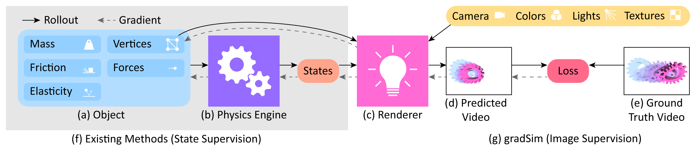
怎么读这张图
- (a) Object：Mass、Friction、Elasticity、Vertices、Forces，是能被优化的量。例子里只有 Mass 未知，随机初始化。
- (b) Physics Engine → States：按当前猜测向前模拟，得到每一时刻的状态。例子：立方体每帧的位姿。
- (c) Renderer：吃 States、Vertices，以及顶部黄条的 Camera、Colors、Lights、Textures，产出图像。
- (d) Predicted Video 和 (e) Ground Truth Video → Loss：两段视频比像素，这是整张图唯一的监督信号。
- 虚线 Gradient：从 Loss 经 Renderer、States、Physics Engine 回到 (a)，这条链就是这篇的贡献。
- 灰底 (f) 和右侧 (g)：(f) Existing Methods 到 States 就停，要 state 监督；(g) gradSim 走到像素，只要 image 监督。
flowchart LR I["Input
60 帧视频
+ 已知场景"]:::example --> M["猜 → 模拟 → 渲染
→ 比像素 → 回传
MSE 的梯度改 m"]:::win M --> O["Output
m 回到 1 kg"]
Level 2 · Stages
5 个 stage：前 4 个是一轮优化，第 5 个把同一张图用到控制
flowchart TD IN["Input
目标视频 + 已知场景"]:::example --> S1 S1["1 · Scene + guess
猜 m，偏重"] --> S2["2 · Diff. physics
每帧的 states"] S2 --> S3["3 · Diff. rendering
预测视频"]:::win S3 --> S4["4 · Pixel loss + backprop
MSE → 改 m"]:::win S4 -->|下一轮| S2 S4 --> OUT["Output
m 回到 1 kg"] S4 -->|θ 换成控制量| S5["5 · Control
一张目标图 → 齿轮滚到位"] click S1 href "#stage-1" click S2 href "#stage-2" click S3 href "#stage-3" click S4 href "#stage-4" click S5 href "#stage-5"
点击 stage 展开 Level 3 细节；为了能求导，每一段都做了近似，见 贯穿全程的 smooth relaxation。
Level 3 · Details
每个 stage 的细节
Stage 1 Scene + initial guess 已知的场景 + 随机猜的参数 → 可以开始模拟的初始状态
- Why：white-box 方法靠显式模型缩小要学的量（§1）：场景结构给定，只留下要估的参数。
- 待估：随机初始化；刚体实验猜 [2, 12] kg/m³（§3.1.1 写 mass，单位是密度）。
- 给定：§3.1.1 明说 impulse 已知，§3.1.3 讲 Fig. 4 时写 "all other physical properties are known"。mesh、相机、光没有说要估，Table 6 也没有这些列，所以我推断它们都是直接给的。
- 能优化什么：见 Table 6。
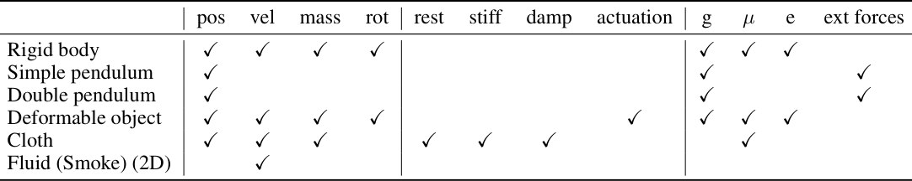
flowchart LR a["给定
mesh · 相机 · impulse"] --> c["初始场景
猜测 θ₀"] b["随机猜
密度 2–12 kg/m³"] --> c
Running example 在这一步
立方体的形状、起始位姿、impulse、相机都给定，只有质量是随机猜的；项目页这一例猜得偏重。
Stage 2 Differentiable physics 当前参数 θ → 每个时刻的状态，并能把梯度传回 θ
符号表（§2.1、App. A）
| 符号 | 白话 | 例子里 |
|---|---|---|
| s = [q, u] | 系统状态：广义坐标 q 和广义速度 u | 位置 x、四元数 r、线速度 v、角速度 ω |
| θ | 要估的设计参数 | 质量 m |
| s⁻, s⁺ | 一个时间步开始和结束时的状态 | 相邻两步的位姿 |
| g(s⁻, s⁺, θ) = 0 | 一步积分写成的隐式关系 | semi-implicit Euler |
| ke, kd | 接触的弹性刚度和阻尼（Table 2 的 "elasticity"） | 决定落地能弹多高 |
| kf, μ | 摩擦刚度和摩擦系数（Table 2 的 "friction"） | 鸭子落地后怎么转 |
| μ, λ | Lamé 参数：抗剪切和抗体积变化。μ 在 Table 3 里是这个，不是摩擦 | 悬梁的软硬 |
| α | 每个单元的激活量，让单元胀缩或弯曲 | 齿轮、walker 的驱动 |
- Why：物理引擎对参数可导，梯度才回得到 mass、friction。
- 物体模型：rigid（Newton-Euler）；deformable solid（四面体 FEM，stable Neo-Hookean）；cloth（三角形 thin-shell，加弯曲能和 lift/drag）。mesh 离散正好接 rasterizer（App. C.1）。
- 积分：semi-implicit Euler（App. A）。
- 反向：discrete adjoint，用隐函数定理把损失的敏感度一步步往回传；semi-implicit 下 Jacobian 是三角结构，adjoint 可以显式算（App. B）。
- 实现：用 Python 子集写 kernel，解析 AST 生成 C++ / CUDA 的前向和反向，包成 PyTorch autograd op（App. D）。
- 另有 pendula、smoke，已有前人做过，论文不主打（App. C.3–C.4）。
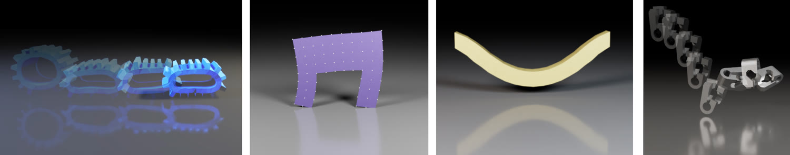
flowchart LR a["状态 s⁻
位姿 + 速度"] --> b["一步积分
g(s⁻, s⁺, θ) = 0"] b --> c["状态 s⁺
下一时刻"] c -.->|adjoint| a
Running example 在这一步
刚体 Newton-Euler 加 compliant contact：受 impulse，落到平面，接触力把它弹起。质量进入 Eq. 2 的 m，所以改变它就改变弹跳。自由落体本身和质量无关，所以"已知 impulse"和接触是质量能被看见的原因（我的推断）。
Stage 3 Differentiable rendering states + 顶点 + 相机、光、纹理 → 预测帧，并能把像素梯度传回 states
- Why：普通 rasterization 用不可导的操作处理可见性和遮挡，梯度过不去（§2.2）。
- How：SoftRas、DIB-R 都把三角形的硬边换成平滑 sigmoid，边缘变半透明。
- DIB-R：前景用可导的 UV 对纹理做 bilinear 采样，背景用 SoftRas 的办法。
- 频率独立：渲染帧数可以少于动力学步数，用精度换计算。
- 论文没说哪个实验用了哪个渲染器。
flowchart LR a["states + 顶点
每帧的位姿"] --> b["SoftRas / DIB-R
硬边换成 sigmoid"] b --> c["预测帧
彩色图"]
Running example 在这一步
每一帧的位姿加立方体的 mesh，用同一相机画出来，得到和目标视频同样大小的预测帧。
Stage 4 Pixel loss + backprop 预测视频 vs 目标视频 → 梯度 → 更新 θ，回到 Stage 2
- Why：把"看起来不一样"变成"质量该往哪改"。
- 损失：pixelwise MSE，§3.1.1。
- 比哪些帧：每帧、每 5 帧、首尾、首中都试过（Fig. 12）；首尾的梯度最好（§3.1.3），视频越短 landscape 越陡（App. F.3）。
- 更新：gradient descent；论文说这个 landscape 适合 momentum 优化器。
- 轮数：项目页写质量、摩擦 100 次内，悬梁材料 200 次内。
- 代价：每个物体单独优化；笔记本 GTX 1060 上不到 1 分钟，CPU 5–20 分钟（App. I）。
flowchart TD a["预测 vs 目标
全部帧，或只比首尾"] --> b["Pixelwise MSE
一个标量"] b --> c["回传
渲染 → states → adjoint"] c --> d["更新 θ
m 逼近 1 kg"] d -->|下一轮 rollout| a
Running example 在这一步
第 1 轮：猜得太重，落地不弹，MSE 大。梯度把 m 往轻改，100 轮内弹跳和目标对上。第二个问题来了：质量知道了，摩擦呢？同一个循环，把未知量换成摩擦，物体换成鸭子，见下面三段视频。
Stage 5 Same graph, used for control 一张目标图 + 控制量 → 把物体驱动到目标的控制量
- Why：验证这些梯度对 vision-based 任务也有意义（§3.2）。
- 改了什么：θ 换成控制量，目标视频换成一张图，loss 比最后一帧。
- control-walker：2D walker；8 路时变正弦信号 → 一层 FC + tanh → 每个四面体一个激活值；三次梯度下降解决。
- control-fem：3D 软齿轮，1152 个四面体，同样的网络，Adam。
- control-cloth：优化布料的初始速度，64–2048 个三角形，有 lift/drag。
- 注意：控制网络的输入是时间 t，不是图像（Fig. 10、App. E）；图像只在 loss 里，没有机器人。这里的 visuomotor 比通常的含义窄（我的观察）。
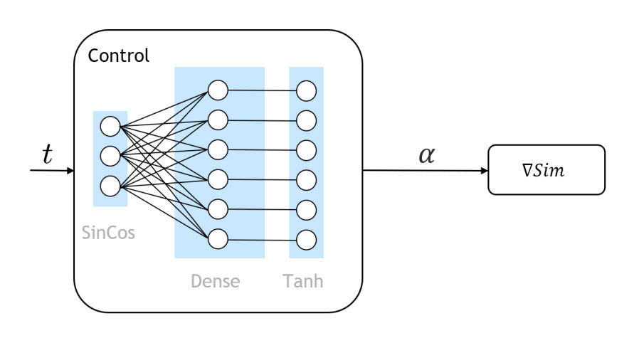
flowchart TD t["时间 t
8 路正弦"] --> n["FC + tanh
每四面体的激活 α"] n --> s["∇Sim rollout
物理 + 渲染"] s --> l["末帧 vs 目标图
pixelwise MSE"] l -->|梯度更新网络权重| n
Running example 在这一步
立方体没有驱动，这一步换成软齿轮：视频没了，只有一张"齿轮在右边"的目标图。第一轮它在原地扭动，优化后滚到目标位置。
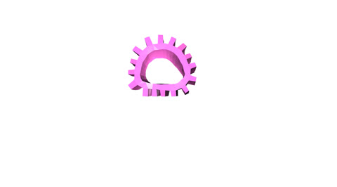
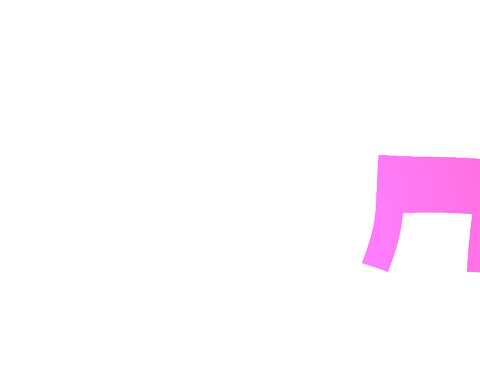
贯穿全程 Smooth relaxation：能求导的代价 硬的、跳变的物理和成像 → 连续的近似
- Why：跳变的地方没有有用的梯度，所以每一段都换成连续的版本。
- 成像：三角形硬边 → sigmoid 软边（Stage 3）。
- 接触：LCP 硬约束 → penalty force（compliant contact，App. C.2）。
- 摩擦：Coulomb 阶跃 → relaxed Coulomb。
- 只到 C⁰：这些力只是连续，论文说足够优化（App. A.1）。
- 接触生成：每个 mesh 顶点对一个 collision plane 测试（App. C.2），论文写的接触都是 mesh 对平面，没写物体对物体。
- 我的推断：目标视频由同一套松弛模型生成，所以这些近似和真实接触的差距在实验里完全看不到。
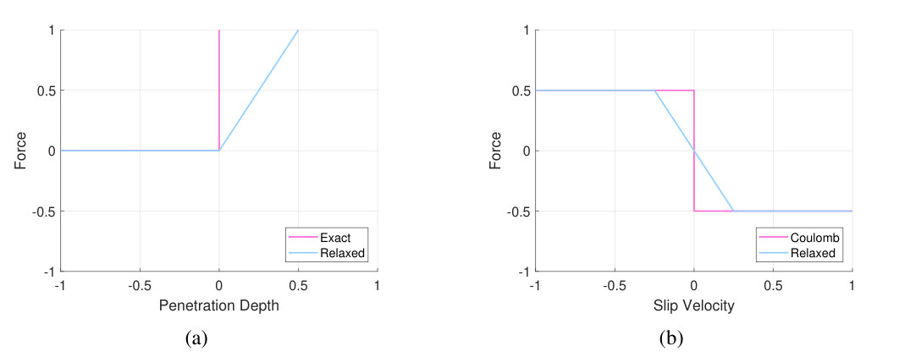
怎么读这张图
- (a) 横轴 Penetration Depth，纵轴 Force：Exact（粉）在 0 处竖直跳起；Relaxed（蓝）是一段斜线 hinge，穿透越深力越大。
- (b) 横轴 Slip Velocity，纵轴 Force：Coulomb（粉）在 0 处阶跃，Relaxed（蓝）是过原点的斜线再饱和。
- 对例子：立方体落地时允许一点穿透，弹跳力随穿透连续变化，所以质量变一点，弹跳也连续地变一点。
Recap：例子覆盖了论文的哪些 idea
| 论文里的 idea | 例子里在哪体现 |
|---|---|
| 物理和渲染接成一张图 | Level 1：立方体的质量到像素的完整链 |
| 刚体、FEM、thin-shell 模型 | Stage 2 立方体；E2 悬梁、布料；Stage 5 齿轮 |
| Discrete adjoint + 代码变换 | Stage 2：立方体每一步的反向 |
| Soft rasterization，物理和渲染频率独立 | Stage 3：立方体每帧被画成可导的图 |
| Pixelwise MSE，只比部分帧 | Stage 4：比全部帧或首尾 |
| 联合估摩擦和弹性 | Stage 4 的鸭子，E1 的 Table 2 |
| 光滑的 loss landscape | E3：真值 1 kg 处的单一最小值 |
| 单张目标图控制 | Stage 5：齿轮、walker、布料 |
| Relaxed contact | 贯穿全程：立方体落地的力 |
| 模型错了会怎样，外观线索，速度 | E5、E6、E7 |
Results
在自己渲染的视频上，只靠像素就能把参数估准；全文没有一段真实视频
顺序同 §3 开头的问题：E1 刚体参数 → E2 可变形物体 → E3 loss landscape → E4 控制 → E5 模型错了会怎样 → E6 外观线索 → E7 速度。比的是参数误差（E1、E2、E5、E6）、到目标的位置误差（E4）和步频（E7），没有成功率。
先查证据里有多少真实视频？全文 + App. K
0 段。下表是我按论文文字整理的，不是作者的表。
| 实验 | 目标视频或目标图从哪来 | 真实视频 |
|---|---|---|
| E1 刚体 | "10000 simulated videos"（§3.1.1） | 0 |
| E2 可变形 | 100 个实例（cloth、balls、beams）；§3.1.2 没写来源，我判断同样是模拟的（项目页的目标是同款渲染） | 0 |
| E3 landscape | 同一模拟器的立方体和 FEM 实体；PyBullet 那条的真值由 PyBullet 生成（Fig. 4 图注） | 0 |
| E4 控制 | 渲染的目标图 | 0 |
| E5 模型误差 | 默认由 ∇Sim 的 rasterizer 生成；唯一的例外用 photorealistic 渲染器（Pharr 2016）出图和前景 mask（§3.3） | 0，最接近真实的一项，mask 也是渲染器给的 |
| E6 外观 | Only color、Shading、Texture 三种渲染；作者称 "early prototypes"（§3.3.3） | 0 |
- 作者自己的话：§3.3.3 "our work does not attempt to bridge the reality gap"；App. K "unmodeled physical phenomena that occur in real-world videos which must be resolved before ∇Sim can be deployed in the wild"。
- 读法：abstract 的 "directly from video sequences" 和 §5 的 "all from raw video observations"，说的都是这些渲染视频。
- 我的推断：目标和模型来自同一引擎，真值一定能被模型精确表示，loss 的最小值就是 0。这是最有利的设定，所以 9.01e-5 量的是优化器和梯度，不是视频到物理的 real-to-sim 精度。
E1只看像素，能把刚体的参数估多准？§3.1.1 · Table 1 · Table 2 · Fig. 3
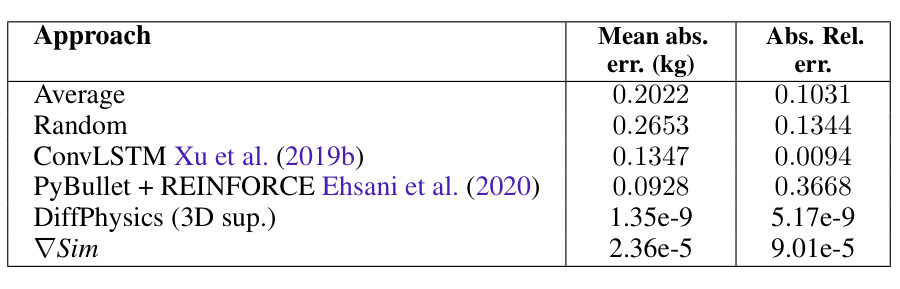
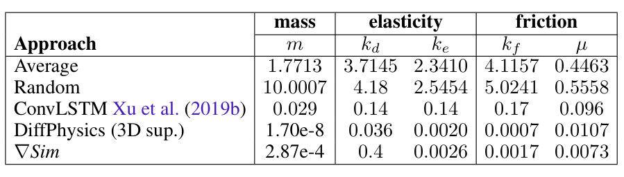
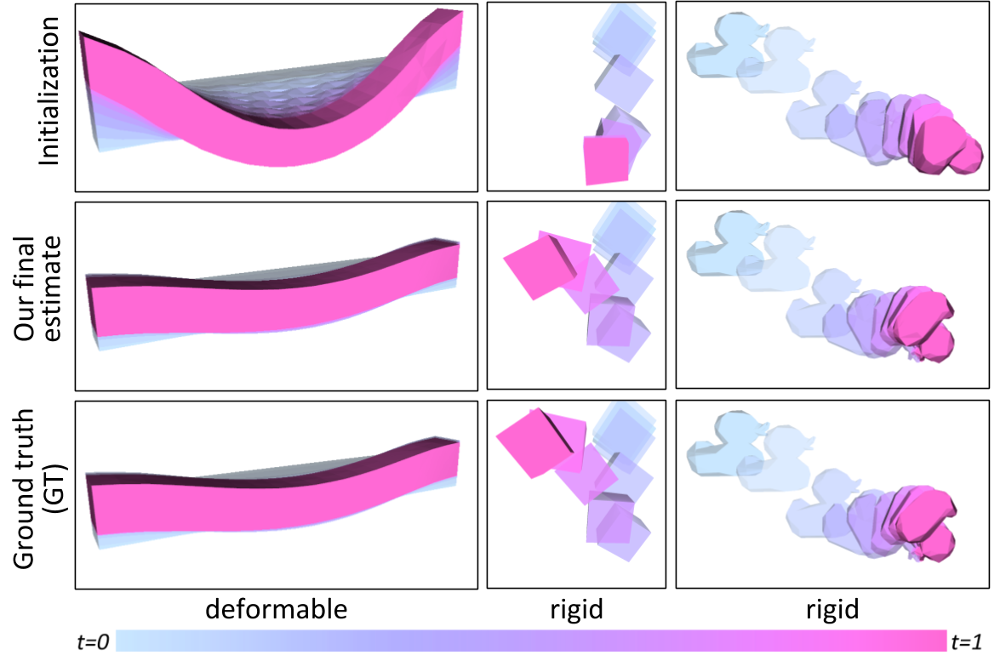
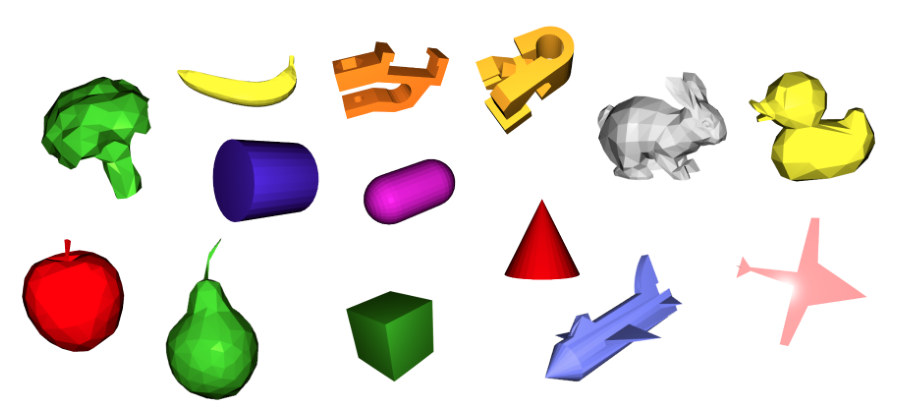
- 说明什么
- 比不用物理的回归准约两个数量级，但输给 3D 监督。质量相对误差 9.01e-5，ConvLSTM 0.0094，PyBullet + REINFORCE 0.3668，DiffPhysics 5.17e-9（Table 1）。联合估计时 μ 的 0.0073 好过 DiffPhysics 的 0.0107，但 kd 是 0.4，比 ConvLSTM 的 0.14 还差（Table 2），正文没提这一点。
- 在故事里
- 回答第一问：能不能从像素穿过仿真器估参数。
- 指标
- Table 1：mean absolute error（kg）和 absolute relative error；Table 2：absolute relative error。未报方差。
- 怎么评测
- 14 个 mesh；密度 [2, 12] kg/m³，ke、kd、kf 取 [1, 500]，μ 取 [0.2, 1.0]；800 个物体训练，200 个测试（App. G）。§3.1.1 写 10000 个视频，和 1000 个物体的关系没说。
- ConvLSTM：EfficientNet-B0，帧缩到 64×64，训练 100 epochs，一次前向给结果（App. H.2）。∇Sim 则对每个物体单独优化，两者不是同一种成本。
- PyBullet + REINFORCE：5 次采样、125 步、200 个物体（Table 5）；App. F.2 说要仔细调步长、噪声、采样范围。
- DiffPhysics 是 ∇Sim 的子集，直接吃 30 FPS 的精确 3D 状态，是上界而不是对手。
- 我的观察：Table 1 两列的比值不一致，∇Sim、DiffPhysics、PyBullet 约 0.26，Average、Random 约 1.96，ConvLSTM 约 14.3，论文没解释。"nearly two orders of magnitude" 只在相对误差列成立（约 104 倍），按 MAE 列约 5700 倍。
- 我的观察：同样叫相对误差，Average 的质量在 Table 1 是 0.1031，在 Table 2 是 1.7713，论文也没解释。
E2可变形物体和布料也行吗？§3.1.2 · Table 3
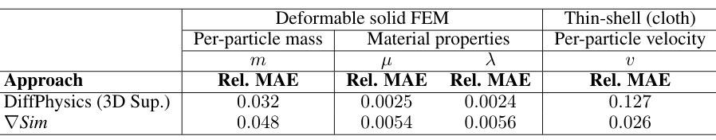
- 说明什么
- 实体略输 3D 监督，布料反而赢约 5 倍。质量 0.048 vs 0.032，μ 0.0054 vs 0.0025，λ 0.0056 vs 0.0024；cloth 速度 0.026 vs 0.127（Table 3）。原因：布料的质心常在物体之外，只给质心有歧义。
- 在故事里
- 回答第二问：像素监督和 3D 监督差多少。布料一列说明 3D 监督选错量时不一定更好。
- 指标
- Rel. MAE。未报方差。
- 怎么评测
- 100 个实例：cloth、balls、beams。
- 只和 DiffPhysics 比，没有 ConvLSTM 和 PyBullet。
- DiffPhysics 在 cloth 上的弱点来自质心这个 3D 监督的选法；换成每顶点的 3D 监督会怎样，论文没测（我的观察）。
E3像素 loss 穿过这么长的非线性链，还能优化吗？§3.1.3 · Fig. 4 · App. F
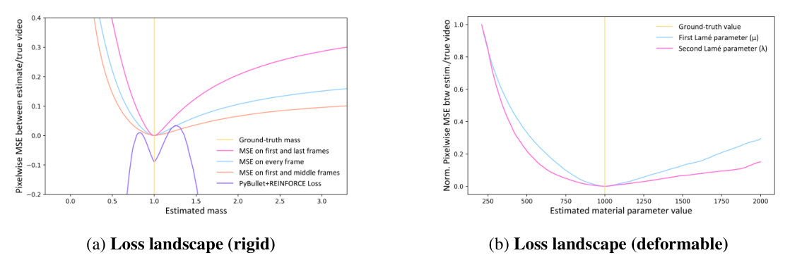
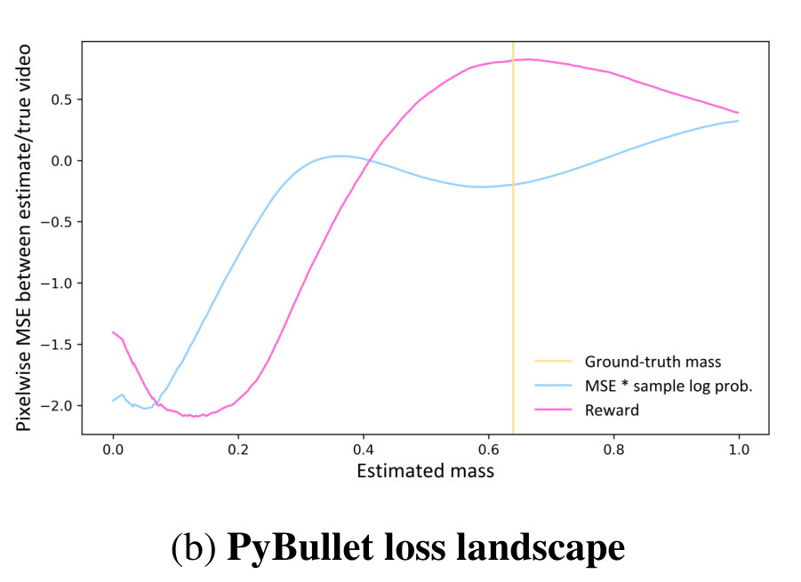
- 说明什么
- ∇Sim 的 loss 在真值处有唯一最小，REINFORCE 的目标则有多个局部极小。Fig. 4a：0.1–5 kg 的初始都能下到 1 kg，首尾两帧最陡；紫线的收敛域很窄。论文用它解释 Tables 1–3 的优势。
- 在故事里
- 回答第三问：梯度是否可信，以及为什么解析梯度比采样好。
- 指标
- 单个参数扫描时的 pixelwise MSE；质量图上是单位质量立方体，其余参数已知。
- 怎么评测
- 都是一维切片，多参数耦合时的 landscape 没画（我的观察）。
- 为公平起见，PyBullet 一条的真值用 PyBullet 生成。
- 我的推断：Fig. 11b 的 Reward 本身是好的，坏的是 REINFORCE 估计器。所以这张图支持"别用 REINFORCE"，不支持"不可微仿真器估不了一维参数"。
E4只给一张目标图，能驱动软体到位吗？§3.2 · Fig. 5 · Fig. 6
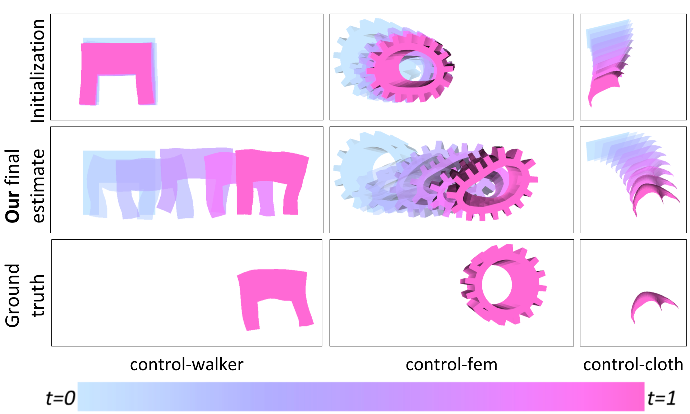
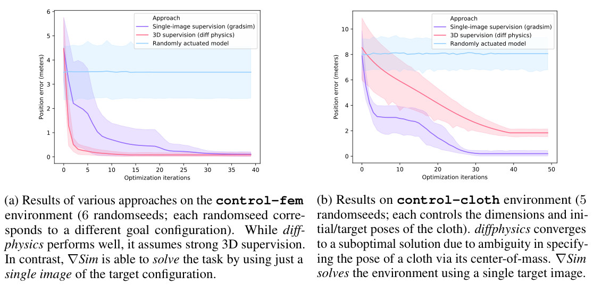
- 说明什么
- 一张图足够到位；软齿轮比 3D 监督慢，布料比它好。Fig. 6a：两者最后都约 0.1 m，DiffPhysics 约 5 次迭代，∇Sim 约 30 次。Fig. 6b：∇Sim 约 0.2 m，DiffPhysics 停在约 1.8 m，随机约 8 m。这些是我读图的约数，论文没给表。walker 三次迭代解决（§3.2.1）。
- 在故事里
- 回答第四问：梯度能否用于视觉目标的控制，不要 3D 监督。
- 指标
- 到目标的位置误差（米），用模拟器内部的 3D 量算；优化时不用它。
- 怎么评测
- control-fem 6 个 seed（各一个目标）；control-cloth 5 个 seed（尺寸和起止位姿不同）。
- DiffPhysics 用 30 FPS 的质心稠密奖励，比单张图强得多的监督；布料上它受质心歧义所限。
- 这是对一个目标的开环优化，不是能泛化的 policy，也没有机器人（我的观察）。每个 episode GPU 不到 5 分钟（App. I）。
E5模型不完美时会坏多少？§3.3.1–3.3.2 · Table 4 左
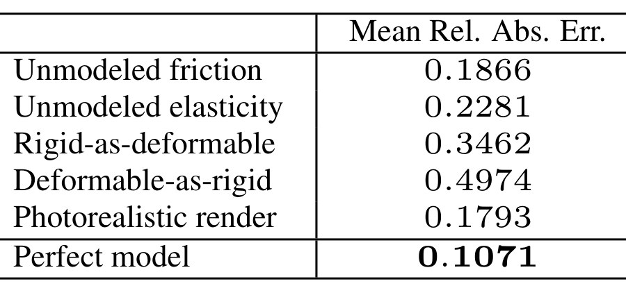
- 说明什么
- 动力学错比渲染错伤得多。Deformable-as-rigid 0.4974、Rigid-as-deformable 0.3462、Unmodeled elasticity 0.2281、Unmodeled friction 0.1866，Photorealistic render 0.1793，Perfect model 0.1071。物体类别错最严重。
- 在故事里
- 回答第五问，也是全文最接近现实差距的实验，作者的答案是 "Moderately"。
- 指标
- 质量估计的 Mean Rel. Abs. Err.
- 怎么评测
- 90 个物体，rigid、deformable、cloth 各占三分之一。
- Photorealistic 一行假设动力学完美，图和前景 mask 都由渲染器给。
- 我的观察：Perfect model 的 0.1071 比 Table 1 的 9.01e-5 大约一千倍，论文没解释（数据混了三类物体，Table 3 的质量误差是 0.048）。所以这张表的尺度和 Table 1 不同。
- 我的观察：每次只错一项。相机错、mesh 错、遮挡、分割错、噪声、几项同时错，都没测。
E6外观线索有用吗？§3.3.3 · Fig. 7
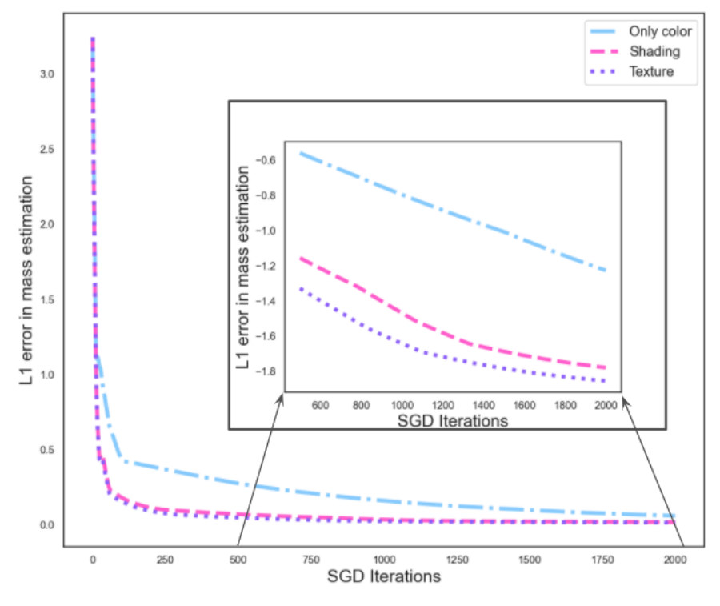
- 说明什么
- 有 shading 或 texture 时收敛明显更快，texture 略好于 shading。原因：纯色的物体内部没有外观线索，渲染和目标之间的对应差。论文没给数字表。
- 在故事里
- 作者称之为 "early prototypes"，用来试探现实差距。
- 指标
- 质量估计的 L1 误差随 SGD 迭代的曲线，到 2000 次。
- 怎么评测
- 三种渲染：Only color、Shading（Phong）、Texture（ShapeNet 纹理）。物体和 seed 数未说。
E7跑得动吗？§3.3.4 · Table 4 右 · App. I
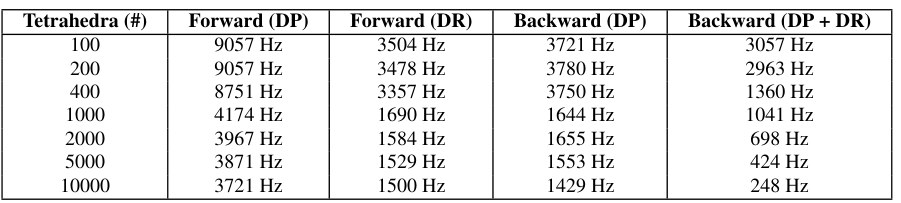
- 说明什么
- 规模到一万个四面体仍然可用。10000 个四面体：Forward DP 3721 Hz，Forward DR 1500 Hz。§3.3.4 引的 1500 steps/second 是前向渲染；同时反向穿过两者是 248 Hz。
- 在故事里
- 说明方法在笔记本上就能跑：参数估计 GPU 不到 1 分钟，控制不到 5 分钟（App. I）。
- 指标
- 每秒仿真步数（Hz）。
- 怎么评测
- 四面体数 100 到 10000。App. I 提到 i7 + GTX 1060 的笔记本，Table 4 的测速硬件没有单独写。
Limits
局限和开放问题
- 作者（App. K）：tiny masses（100 g 及以下）处理不好，要重新看引擎设计和数值稳定性。
- 作者（App. K）：没有 articulated bodies。
- 作者（App. K）：接触只适合简单几何（三角网格对平面），contact-rich 运动能力有限；建议用 LCP。
- 作者（App. K、§3.3.3）：真实视频里的未建模现象要先解决才能 "deployed in the wild"；这篇不做 reality gap。
- 我的观察：真实视频 0 段。视频是白底、单物体、无遮挡、无噪声（项目页 GIF）。
- 我的推断：mesh、相机、光、初始状态、外力都当已知；错相机和错 mesh 没测。
- 我的观察：Tables 1–4 没有方差，只有 Fig. 6 画了 seed 范围；代码仓库在，但这页没有跑过。
For Agent-centric real-to-sim
对我们有什么用
- 把 assumed 的 mass、friction 变成测量，这是模板，但它的前提我们都没有。9.01e-5 的设定里 impulse 已知，mesh 和相机也是给定的（后者是我的推断，见 Stage 1）；r2s-lite 的 DROID 相机可差约 20 cm，mesh 是 GPT 设计的，夹爪接触力未知。我的推断：先修相机和 mesh，否则像素损失会把几何误差记到质量和摩擦头上。论文没测过错相机，还说 100 g 以下不行（App. K），所以这条路在我们的场景上没有被证明。
- 不换仿真器也能先试。Fig. 11b 里 PyBullet 的 reward 本身在真值附近最高，坏的是 REINFORCE。我的推断：对一两个参数，在 Isaac 里扫几次重放，用
sim_match_measure的 real/sim mask 比较当损失，就是没有梯度的 gradSim。但它的指标"和真值比"只有合成数据才有；DROID 上要换成留出帧的预测误差，这也是我们"没有 sim-to-real 证据"的缺口，这篇补不上。 - 先保证模型类别对，再管外观。Table 4：Deformable-as-rigid 0.4974、Rigid-as-deformable 0.3462，都比 Photorealistic render 0.1793 伤得多。对应我们把毛巾做成 box 加 parts 的刚体，把 "take the lid off" 当成 "put into a receiver"：结构性错误，调参数救不回来。后一条是我的类比，论文只测了刚体和可变形互换，没测任务角色。